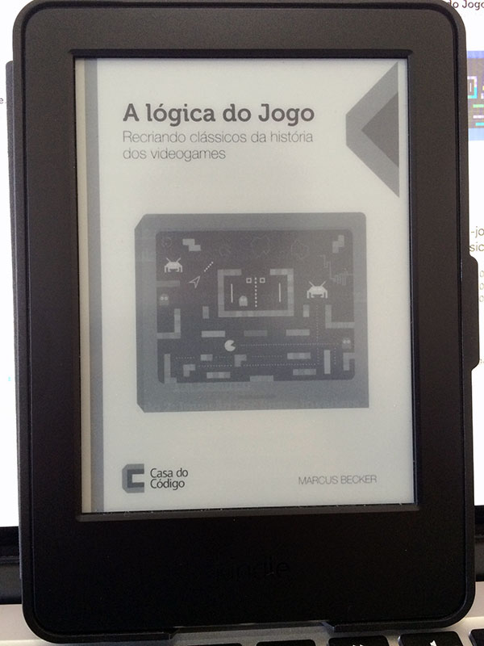

O livro "A Lógica do Jogo - Recriando clássicos da história dos videogames", escrito por Marcus Becker e publicado pela editora Casa do Código, é um ótimo guia para aprender a programar jogos clássicos como Tetris, Space Invaders, Asteroids, Pong, Pac-Man, entre outros, utilizando Java.
Neste livro o autor apresenta como programar a mecânica de cada um destes jogos clássicos, o que pode ser usado como base para desenvolver muitos outros jogos. Eu gostei da maneira que o Marcus abordou o tema, pois é muito legal aprender a programar jogos clássicos.
Praticamente qualquer curso ou tutorial para iniciantes começa apresentando alguns desses jogos antes de começar a fazer algo mais avançado. Além disso, é um ótimo exercícios tentar recriar algum jogo clássico, pois a arte é fácil de encontrar (quando necessária) e você sempre acaba aprendendo algo novo.
Os capítulos inicial do livro são uma introdução de como fazer algumas coisas básicas como Java. Nos demais capítulos, e até o final do livro, os jogos clássicos mencionados aqui são apresentados. Em cada capítulo algo é adicionado à um exercício que é construir um jogo chamado Nave Quebrada durante o livro.
O livro é uma ótima leitura para aprender sobre a mecânica destes jogos clássicos, mas vai exigir um conhecimento prévio de Java para aproveitar ao máximo cada código apresentado. Os projetos do livro estão disponíveis no GitHub.
Minha única crítica ao livro é o uso da linguagem Java. Apesar de Java ser uma ótima linguagem para aprender a programar (eu aprendi com Java), atualmente ela não é uma das mais utilizadas para se desenvolver jogos. Na minha opinião teria sido melhor escolher uma linguagem ou até mesmo uma game engine que fosse mais adequada a realidade da indústria.

O livro está disponível em versão física e digital pelo site da Casa do Código. Gostei da opção de enviar o livro digital direto para o meu Kindle, onde li o livro inteiro. Apesar de ficar um pouco ruim para ver código nele, o livro estava muito bem formatado para ele. Obrigado ao Marcus Becker por me enviar uma cópia digital da sua obra!